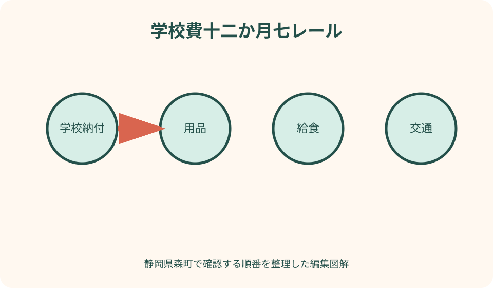
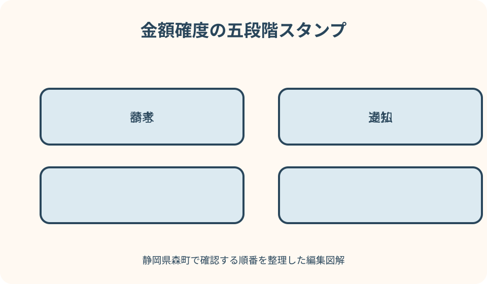

学校・就学・家庭記録｜最終確認 2026-08-10
静岡県森町の年間学校費を計画｜用品・給食・行事・就学援助を整理
学校費は、入学用品のような一度の購入、給食や学校納付のような定期支出、修学旅行や部活動のように学年・参加内容で変わる支出が混在します。全国平均や前年のきょうだい額を足すだけでは、森町の今年度の支払月と実負担は分かりません。学校通知、町の就学援助、入学時の応援金を別々に確認し、予定額・請求額・支払済み・支援反映後を四列で管理する方法をまとめます。
結論：年間総額より支払月と確度を分ける
学校費の表は、費目、支払月、予定額、確定額、支払方法、支払済み、支援反映後の実負担という七列にします。見込みと請求を一つの金額欄へ上書きしません。
入学前に分かる金額は予算として置き、学校から年度案内が届いたら確定欄へ移します。前年の金額や知人の例には「参考」と日付を付けます。
一年の合計だけでなく、四月、学期初め、修学旅行前など支出が重なる月を見ます。残高確認日を引落日の数日前に置くと、資金移動の担当を決められます。
この記事は各家庭の確定額、学校の請求、支給・認定を保証しません。在籍校と森町の最新通知を基準に、家族の実際の支払を記録します。
森町の学校窓口と支援情報を確認する
森町公式の小中学校一覧には、町立三小学校・二中学校と連絡先が掲載されています。学校ごとの納付や用品は、在籍校から届く年度資料で確認します。
森町の就学援助ページは、経済的理由で就学が困難な家庭に必要経費の一部を援助する制度を案内しています。対象は教育委員会の認定を受けた家庭で、申請希望者は在籍校へ連絡するとされています。
森っ子就学応援金は、入学時の負担軽減を目的とする別制度です。就学援助と名称・対象・担当・時期を混ぜず、今年度の条件を公式ページで確認します。
学校教育課、健康こども課、在籍校のどこへ尋ねるかを制度別に記録します。一つの窓口へ学校費全体の支給可否を決めてもらう前提にしません。
年度表は四月から翌三月まで作る
列に月、行に費目を置き、入学前の一月から三月は準備欄として別枠にします。ランドセルや制服を前年中に買っても、入学年度の準備費として分かるようにします。
各月の上段に予定、下段に実績を書きます。予定を実績で消すと、翌年度に見積もり差を検証できません。
きょうだいは子ども別に表を作り、世帯合計だけ別シートで集計します。同じ品を譲り受けた、行事学年が違うなど個別条件を残します。
費用が発生しない月も空欄ではなく「通知なし」「請求なし」と確認日を書きます。未確認の空欄とゼロを区別します。
学校納付は名称・対象月・方法を記録する
学校からまとめて請求される費用は、教材、学年、会費、積立など通知上の名称で行を分けます。「学校費」と一行にすると、増減の理由が分かりません。
口座引落しなら、金融機関、口座、引落日、再引落しの有無、残高確認日を記します。現金集金や振込の場合は、封筒・手数料・受領確認を別にします。
月額が同じに見えても、学期、行事、精算で変わる可能性があります。年間予定と実際の通知が違ったときは、差額と説明日を記録します。
任意の会費や購入が含まれる場合は、必須・任意の表示、申込期限、辞退方法を学校資料で確認します。家庭が名称だけで義務と判断しません。
入学・進級用品を指定品と消耗品に分ける
指定の有無を確認する用品、家庭が選べる用品、手持ちを再利用できる用品、年間で交換する消耗品の四群にします。説明会前の一括購入を避けます。
かばん、上履き、体操服、文具、端末付属品などは、学年・学校の最新案内で数量、色、規格を確認します。前年のきょうだい用品が使えるかも学校へ尋ねます。
購入価格だけでなく、名入れ、送料、裾直し、予備、買替えを別欄にします。最安値一つで年間予算を作らないようにします。
譲渡・中古品を使う場合は、状態、現行仕様、衛生、名前の消去を確認します。利用の可否を記事で決めず学校の指定に合わせます。

給食費は実際の請求と支援反映を分ける
給食費の行には、対象月、請求額、欠食・休業時の扱い、支払方法、精算を置きます。年間の食数や単価を家庭で推測して確定額にしません。
文部科学省の学習費調査手引は、減免や払戻しがある場合に、最終的な実負担を分けて把握する考え方を示しています。家計表も請求と実負担を別列にします。
森町の就学援助では、認定者への援助費目として学校給食費の実費が掲載されています。ただし対象・支給方法は認定と最新案内を確認します。
弁当材料、休日の食費、学校外で購入した飲食は、給食費の行へ混ぜません。家庭の食費として別管理し、学校費の増減を見えやすくします。
通学費は運賃・用品・送迎を三つに分ける
公共交通を使う場合は、定期・回数券・都度運賃、停留所までの交通、更新月を記します。利用条件や通学利用の可否は運行者と学校へ確認します。
徒歩・自転車でも、雨具、靴、反射材、修理、ヘルメットなど通学用品が発生します。買替え時期と使用目的を記録します。
家族送迎は燃料だけでなく、駐車、保護者の往復時間、車両維持を別の生活費として見える化します。学校請求と同じ欄へ入れません。
就学援助の費目には通学費が掲載され、通学距離の基準があると森町は案内しています。距離だけで対象と決めず、学校へ申請条件を尋ねます。
遠足・校外活動・修学旅行は支払段階を分ける
行事費は、積立、参加決定後の請求、個人で準備する物、現地の小遣い、終了後精算に分けます。旅行代金一つで予算を作りません。
学年予定に行事名があっても、日程、内容、費用が確定したとは限りません。学校からの正式通知が届くまで参考額として扱います。
欠席・中止・延期・転校時の返金や追加費は、契約条件や学校案内を確認します。返金される前提で他の支出へ充てません。
森町の就学援助では、校外活動費や修学旅行費も費目として掲載されていますが、対象学年、範囲、認定区分で異なります。個別支給を保証しません。
部活動費は学校納付と家庭購入を分ける
部活動は、部費、連盟・大会、用具、制服・ウェア、交通、宿泊、補食などに分けます。活動へ入る前に年間予定と必須・任意を確認します。
用具は初期購入だけでなく、消耗、サイズ変更、修理を見込みます。高額品を先に買う前に、貸与、共同利用、中古の扱いを学校へ尋ねます。
大会参加は選抜、会場、交通で変動します。すべての大会へ参加する最高額と、現在確定した額を別にして幅を持たせます。
学校外のクラブや習い事は、学校部活動の行へ混ぜません。文部科学省の学習費調査も学校教育費と学校外活動費を分ける枠組みを示しています。
オンライン学習と家庭機器の費用を整理する
学校から貸与される端末について、家庭が負担する通信、付属品、破損時、充電、保険の案内を確認します。端末貸与があれば費用ゼロとは限りません。
家族共用の回線やパソコンは、学校学習だけの費用か日常生活費かを分けます。按分する場合は家庭内のルールを記録します。
任意購入のアプリ、プリンター、インク、用紙は、学校から求められた物と家庭判断の物を別にします。便利さを必須費用として集計しません。
森町の就学援助にはオンライン学習通信費が費目として掲載されています。金額、対象、支給の扱いは認定後の案内を確認します。
就学援助は家計簿の割引欄に先入れしない
森町公式では、要保護者と準要保護者を案内し、提出書類を基に収入、世帯構成、家庭状況、学校長の意見などを踏まえ教育委員会が総合判断するとしています。
申請前に「対象だろう」と支給額を予算へ差し引かず、未確定欄へ置きます。認定日、対象費目、支給時期、振込・相殺の方法を通知で確認します。
掲載費目すべてが同じ金額・同じ条件で支給されるとは限りません。小中学校、要保護・準要保護、学年、実費など違いがあります。
相談時は家計の事情を恥と捉えず、申請期限、年度途中申請、必要書類、家計急変の扱いを在籍校へ尋ねます。記事は認定可能性を判定しません。
森っ子就学応援金は入学年だけの別枠にする
森町は入学時の家庭負担軽減を目的に森っ子就学応援金を案内しています。対象年度、基準日、児童手当、校種、公務員かどうかなど公式条件を確認します。
小中学校の対象家庭でも申請不要の場合と手続が必要な場合が案内されています。自分の勤務区分や通知の有無を担当課へ確認します。
公式ページには現在の交付額が示されていますが、将来年度まで同額とは限りません。入学予定年度のページと通知が出てから予算を更新します。
応援金と就学援助は別制度です。一方を受ければ他方が自動認定・対象外になると推測せず、各担当へ関係を確認します。
平均額は自宅の請求予定に置き換えない
文部科学省の子供の学習費調査は、学校教育費、給食費、学校外活動費などの実態を把握する統計です。全国の結果は家計の参考であり、森町の個別請求書ではありません。
平均より高い・低いだけで無駄や不足と評価しません。学年、部活動、交通、きょうだい、既用品の再利用など条件を確認します。
全国統計を使うなら調査年度、公立・私立、学校段階、費用区分を明記します。古い結果と今年の学校通知を同じ列で足しません。
家庭の計画では平均額より、学校通知、見積書、請求、領収書の順に確度を上げます。情報源と確認日を金額の横へ付けます。
領収書と通知を費目番号で結ぶ
年間表の各行へ費目番号を付け、紙の通知、領収書、振込記録、口座明細へ同じ番号を記します。後から何の支出か追えるようにします。
口座引落しは通帳表示だけでは内訳が分からない場合があります。学校通知と対象月を組にし、きょうだい分を分けます。
現金支払は、提出日、受領確認、釣銭、控えの有無を記録します。子どもへ預けた日と学校が受け取った日を同じにしません。
個人情報を含む資料は保存先と期限を決めます。家計表へ必要以上の口座番号や所得書類の画像を貼りません。

月次確認をする良い点
良い点は、年度総額だけでは分からない支出集中月を事前に見つけられることです。引落し前の残高確認と家族の資金移動を予定にできます。
予定と実績の差を残すため、翌年度の予算を自宅の実績から作れます。全国平均や他家庭の例への依存を減らせます。
きょうだい別に費目を持つことで、入学年、修学旅行年、部活動の開始が重なる時期を把握できます。世帯合計だけでは見えない理由が分かります。
就学援助など支援の認定・支給を別欄にすることで、請求額と最終負担を混同しません。支給前の資金が必要な場合にも気づけます。
学校費案内へ注文したい点
注文したい点は、学校納付、用品、給食、行事、部活動、支援制度の情報が別々に届き、家庭が年間の支払月を一目で見にくいことです。
入学説明時に概算が示されても、確定額、引落日、任意・必須、支援反映の関係が分からない場合があります。情報の確度を明示してほしいところです。
制度ページには費目が掲載されていても、個別家庭の対象、支給額、支払との相殺方法までは申請・認定後の確認が必要です。ウェブだけで家計計画を確定できません。
家庭側も、すべてを学校へ一括で尋ねず、在籍校の請求、町の援助、入学応援金を担当別に整理すると回答を得やすくなります。
代案・結論：金額未定は幅と確認日で置く
行事や部活動費が未定なら、ゼロで置かず、前年参考の幅、確定予定月、問い合わせ先を書きます。上限を保証された額として扱いません。
購入が間に合わない場合は、貸与、再利用、購入時期の相談が可能か学校へ尋ねます。学用品を家庭判断で省略せず、必要な条件を確認します。
支払いが難しい場合は、期限を過ぎるまで待たず学校へ相談し、就学援助などの入口を確認します。記事が減免や猶予を約束するものではありません。
結論として、未確定を無理に埋めるより、誰がいつ確定するかを記す方が、家計の見通しと相談の両方に役立ちます。
大石の視点：住居費と学校費を同じ月表で見る
転居や住宅購入では、敷金、引っ越し、家具と、入学用品、学校納付が同じ春に重なることがあります。私は契約前に四月までの月別資金表を作ることを勧めます。
物件広告の学校名や距離から、学校費、交通費、部活動費を推測することはできません。在籍校の資料と家庭の通学方法を確認します。
住宅ローンの毎月額だけで余裕を判断せず、入学年、修学旅行年、きょうだいの進学年を重ねます。単年の平均より支出の山が重要です。
不動産会社は就学援助や応援金の認定・交付を保証できません。公式条件と担当窓口を確認し、未認定の支援を自己資金として数えません。
記事固有の学校費十二か月レール
横に四月から翌三月、縦に学校納付、用品、給食、交通、行事、部活動、支援の七レールを引きます。支出が重なる月を色で示します。
各金額は、参考、通知、請求、支払、実負担の五段階で形を変えます。同じ数字でも確度が違うことを見えるようにします。
支援レールは入金だけでなく、申請、書類、認定、支給時期を置きます。請求レールと直接相殺されるかは通知で確認します。
右端に翌年度メモを作り、買替え、積立、進級、きょうだいの行事を移します。年度が終わるたび実績から次の予算を作れます。
家族で月末に確認する五問
第一は翌月の引落日と残高、第二は新しい通知、第三は未提出の申込、第四は未確定費、第五は支援手続の次の期限です。
金額差があれば、請求元、対象月、きょうだい、返金・追加の説明を確認します。すぐに二重請求と断定せず内訳を照合します。
予定外購入は、必須だったか、買替えだったか、家庭判断だったかを分類します。家族を責める記録ではなく翌年度予算の材料にします。
月末確認後、個人情報を含む不要な写しを整理し、原本の保存場所を更新します。家計表の共有相手も見直します。
学校・町へ尋ねる短い文例
学校納付は「今年度の費目、概算、確定時期、引落日、任意・必須の区別を確認したいです。年間予定の資料はありますか」と尋ねます。
用品は「この品は指定か、現用品を再利用できるか、購入期限と取扱店の指定があるか教えてください」と買う前に確認します。
就学援助は「制度の申請を検討しています。申請期限、必要書類、年度途中の扱い、認定後の支給方法を確認したいです」と在籍校へ連絡します。
応援金は「今年度の対象条件、手続の要否、通知時期、口座変更の方法を確認したいです」と担当課へ尋ね、知人の受給例を根拠にしません。
まとめ：通知額と実負担を別々に残す
静岡県森町の年間学校費は、学校納付、用品、給食、交通、行事、部活動を別行にし、四月から翌三月の支払月へ配置します。
前年参考、今年度通知、請求確定、支払済み、支援反映後の実負担を区別します。全国平均や他家庭の金額は確定額にしません。
就学援助と森っ子就学応援金は、対象、担当、時期が異なります。申請・認定前に家計から差し引かず、公式通知で更新します。
今日の一歩は、学校から届いた費用資料を七費目へ分け、次の三か月の引落日、未確定額、問い合わせ先を一枚へ書くことです。
公式情報・確認先
掲載内容は次の一次情報を基礎に整理しました。営業、料金、催し、交通は変わるため、出発前または手続き前にリンク先で最新情報を確認してください。
- 小学校・中学校（静岡県森町、2026-08-10確認）
- 就学援助制度について（静岡県森町、2026-08-10確認）
- 森っ子就学応援金について（静岡県森町、2026-08-10確認）
- 公共交通（静岡県森町、2026-08-10確認）
- 令和7年度子供の学習費調査の手引き 保護者用（文部科学省、2026-08-10確認）
- 子供の学習費調査 調査の概要（文部科学省、2026-08-10確認）
- 就学援助制度について（文部科学省、2026-08-10確認）